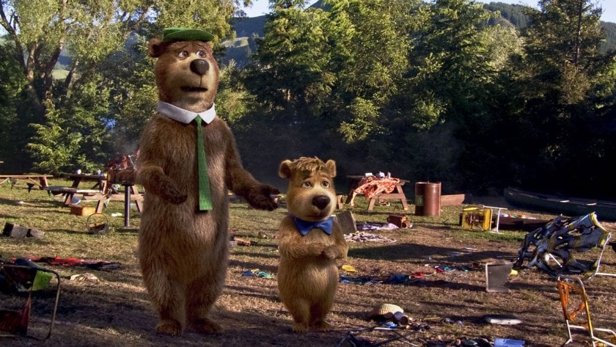

A História de Zé Colméia e Catatau
Zé Colméia é um dos personagens mais icônicos do universo Hanna-Barbera. Criado no início dos anos 1960, ele estreou como coadjuvante no desenho *The Huckleberry Hound Show*, mas logo ganhou sua própria série devido à sua popularidade. Ele é um urso carismático e esperto, conhecido por suas tentativas quase sempre fracassadas de roubar cestas de piquenique no Parque Jellystone, onde mora.
Seu companheiro fiel, Catatau, é o oposto de Zé Colméia. Enquanto Zé é atrevido e impulsivo, Catatau é mais cauteloso e tenta aconselhar o amigo a não se meter em confusão. Mesmo assim, ele sempre acaba sendo cúmplice das travessuras. Juntos, os dois formam uma dupla que encanta crianças e adultos com sua química única e aventuras hilárias.
Além disso, o maior desafio de Zé Colméia é lidar com o Guarda Smith, que está constantemente tentando impedir as trapaças do urso para proteger os visitantes do parque. As interações entre os três personagens são o coração das histórias, trazendo momentos engraçados e cheios de criatividade.
Curiosidades sobre os Personagens
- Zé Colméia foi inspirado em Art Carney, um ator popular nos anos 1950 e 1960.
- O Parque Jellystone é uma referência ao famoso Parque Nacional de Yellowstone, nos Estados Unidos.
- O bordão clássico de Zé Colméia é "Mais esperto que a média dos ursos!".